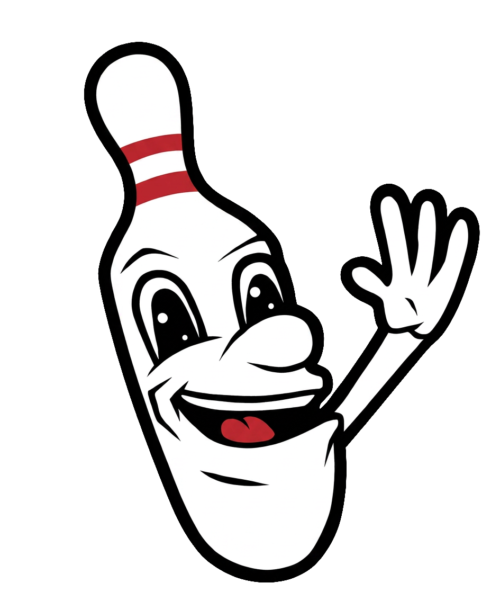

Scroll down. Hover the mascot. Scroll to the red button and watch him get excited.
Filler content so there's something to scroll. The buddy idles in the corner the whole time, bobbing gently.
When this section's button scrolls into view, the buddy points at it and pops a speech bubble.
Book a LaneMore filler. Buddy goes back to idling once the CTA is out of view.
